TOURIST in TOUR
싱픔투어 / 프로그램 소개
-
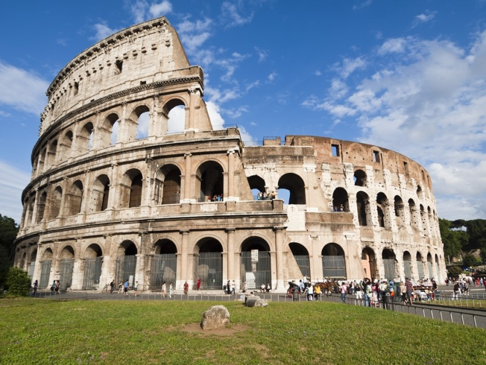
이탈리아 콜로세움
2021-01 ~ 2021-03
로마가 건축한 것 중에서 가장 큰 원형극장이다. 이탈리아 로마의 중심지에 위치한, 고대 로마시대에 건설된 투기장. 원래 이 타입의 것은 원형극장(Amphitheatre)이라고 하는 건축물로 서기 80년경 완공되었다.
-
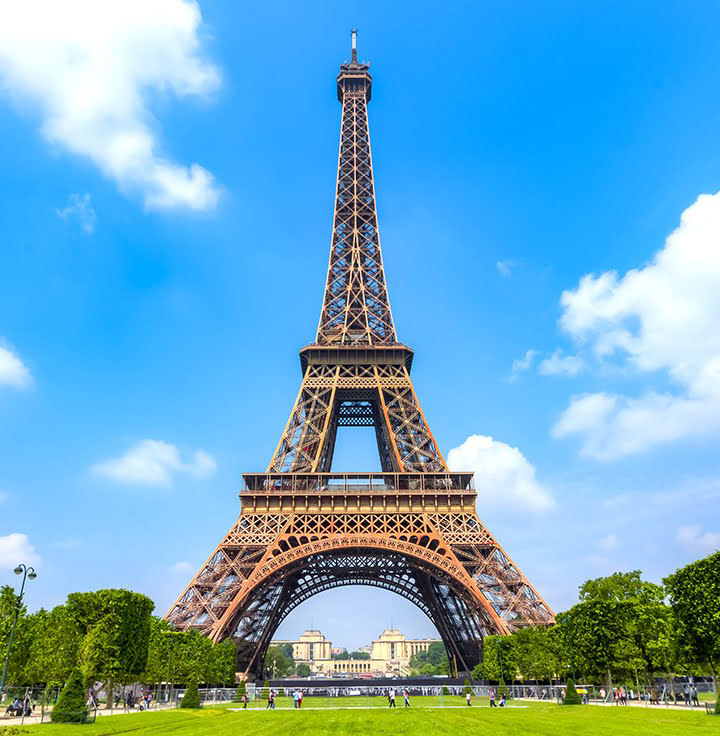
프랑스 에펠탑
2021-01 ~ 2021-03
에펠탑은 파리에서 가장 높은 건축물이다. 프랑스에서 가장 유명한 랜드마크이다. 근대 건축의 혁신점 중 하나로, 1889년에 300m라는 경이적인 높이를 달성하여 1930년까지 크라이슬러 빌딩이 완공되기 전까진 세계에서 가장 높은 구조물이었다.[6] 건축 높이 300m에 훗날 추가된 안테나 24m를 더해 전체 높이 324m다.
-
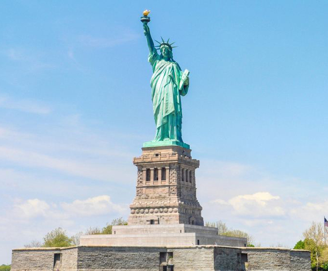
미국 자유의 여신상
2021-01 ~ 2021-03
프랑스가 19세기 말에 미국의 독립 100주년을 축하하기 위해 제작한 동상이다. 미국 뉴욕 리버티 섬에 세워진 93.5m의 키에 204t의 육중한 체중을 가진 여신상으로, 미국, 아메리칸 드림의 상징이라 봐도 된다.
-

영국 빅벤
2021-01 ~ 2021-03
런던의 웨스트민스터 궁전에 있는 시계탑이다. 웨스트민스터 궁전의 남쪽 빅토리아 타워와 대칭이 되도록 북쪽에, 1859년 E.베켓이 설계하여 빅토리안 고딕 양식으로 건축되었다.
-
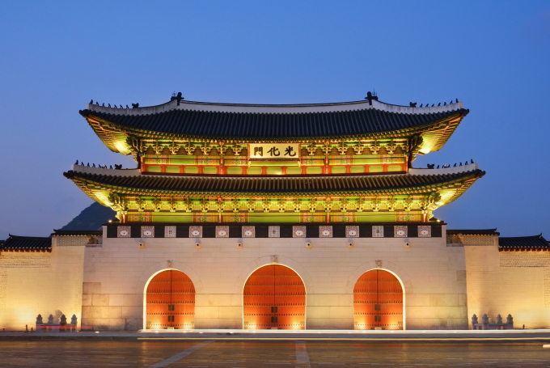
한국 광화문
2021-01 ~ 2021-03
광화문은 경복궁의 남쪽에 있는 정문이다. 다만 현대에는 '광화문'이란 명칭 자체가 궐문으로서의 광화문 뿐만 아니라 세종대로, 광화문광장 등을 포함한 법정동 세종로 및 그 주변을 통칭하는 지명으로 더 많이 쓰이는 감이 있다.
-
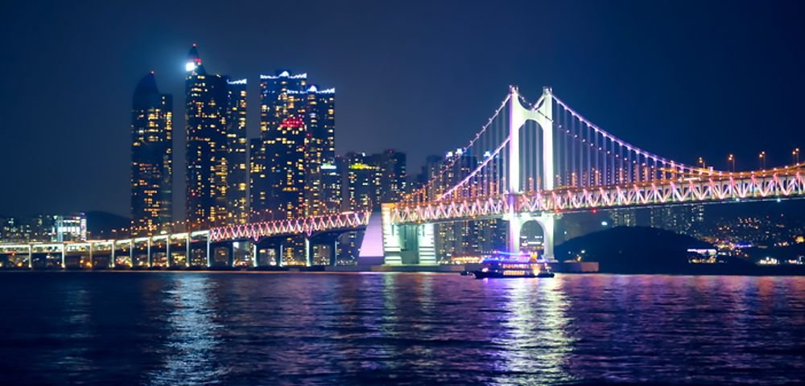
부산 광안리
2021-01 ~ 2021-03
광안대교는 대한민국 최대의 해상 복층 교량이다. 부산광역시 남구 대연동 도시가스교차로에서 출발하여 해운대구 우동 센텀시티에서 끝나는 교량. 66번 부산광역시도와 77번 부산광역시도의 일부이다.
-
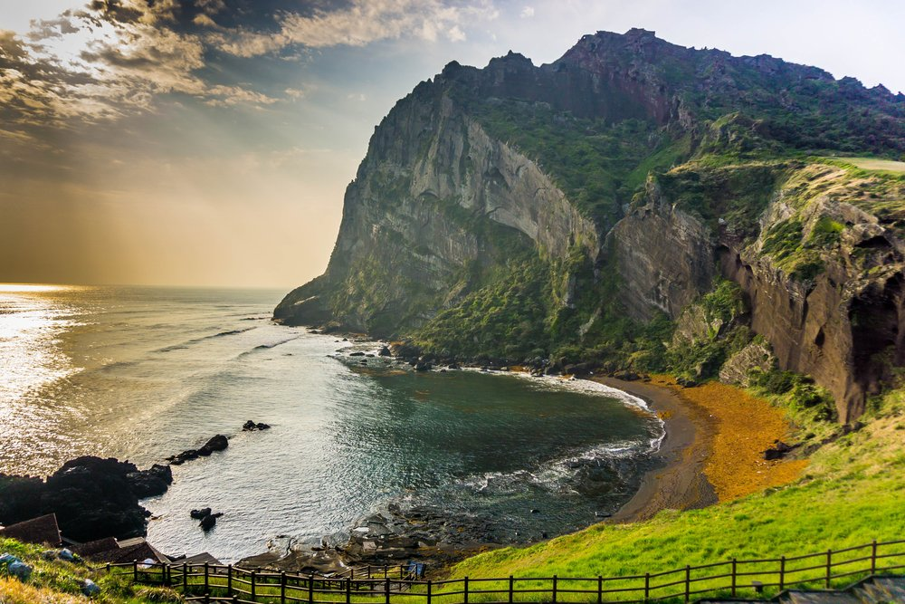
제주도 성산일출봉
2021-01 ~ 2021-03
커다란 사발 모양의 분화구가 특징인 천연보호구역이다. 제주도가 만들어진 시기인 신생대 제4기 플라이스토세에 단성화산인 오름과는 달리 유일하게 현무암질 마그마가 얕은 바닷속에서 분출하여 만들어진 수성화산의 일종인 응회구이자 섯시형 화산체이다.
-
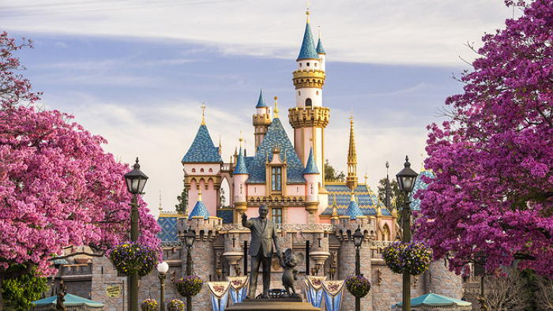
디즈니랜드
2021-01 ~ 2021-03
1955년에 개장한 세계 최초의 테마파크이다. 애니매트로닉스, 다크라이드 기술의 최고봉이자 테마를 중요하게 여기는 디즈니답게, 디즈니랜드의 어트랙션 대부분은 다크라이드가 차지하고있다.
-
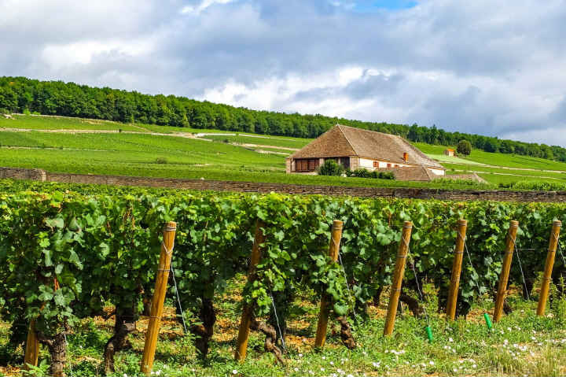
보르도 와이너리투어
2021-01 ~ 2021-03
보르도가 와인의 성지임을 몸소 체험하며 느끼는 와인 전문 투어 입니다. 프랑스의 항구도시. 프랑스 남서부 누벨아키텐 지방의 지롱드 주에 속해 있으며, Bordeaux라고 쓴다. 보르도 시 자체는 바다(대서양)와 직접 접하지 않지만 가론 강(Garonne)을 통해 진출입이 가능하다.
-
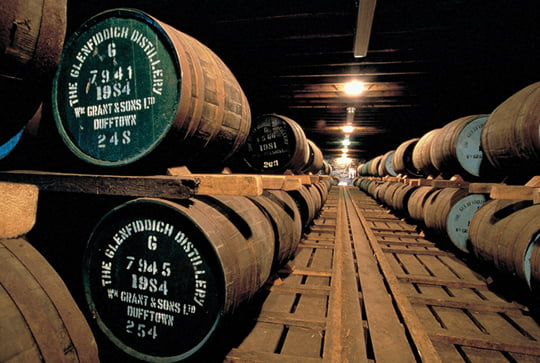
스코트랜드 위스키 증류소
2021-01 ~ 2021-03
스카치 위스키는 스코틀랜드에서 생산되는 위스키를 말한다. 맥아 (malt, 발아된 보리) 및 다른 곡식들을 이용하여 발효시켜 증류한 뒤 주로 셰리 나 버번 위스키 를 숙성했던 오크통에서 숙성하여 만든다.
-
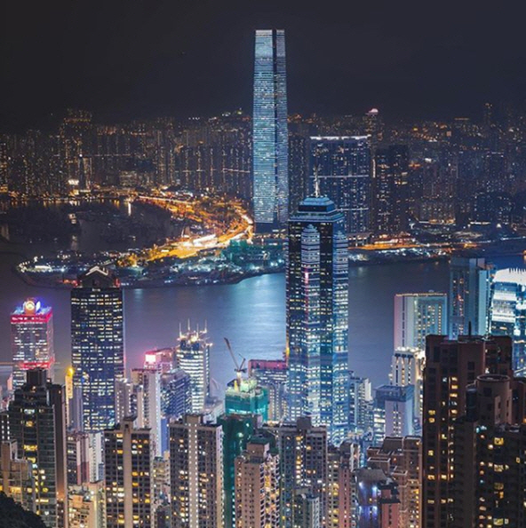
홍콩
2021-01 ~ 2021-03
홍콩에는 육지를 오가는 페리가 있다. 홍콩 빅토리아 하버를 넘나드는 페리 운행체계를 이르는 말. 한강 유람선처럼 보이지만 강물이 아닌 바다를 건너는 바다용 배다.
-
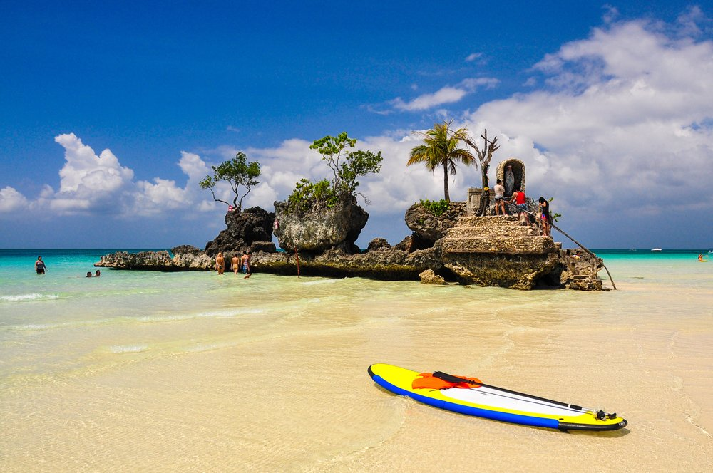
필리핀 보라카이
2021-01 ~ 2021-03
보라카이의 화이트 비치 등은 세계적으로 인기있는 휴양지이다. '보라카이(Boracay)'의 어원은 바다의 색을 표현한 '흰색 천'을 의미하는 원주민어 'borac'에서 유래되었다는 설과 거품을 의미하는 'bora' 그리고 흰색을 의미하는 'bocay'의 원주민어에서 비롯되었다는 설이 있다.